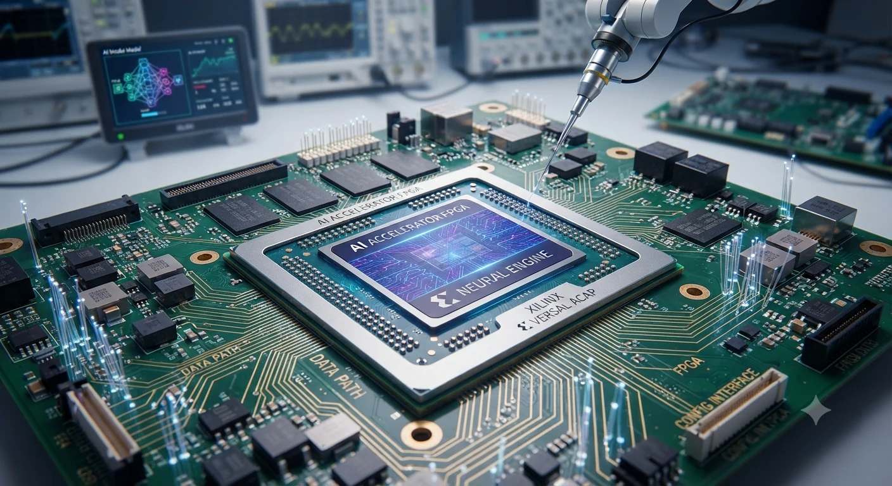

Intelligence
Models, agents, tools and the questions that decide when automation is useful.
Technology Intelligence
ASARK maps the systems shaping computing, markets, creativity, space and transportation through clear guides, visual explainers and responsible perspectives.

Technology overview

AI & Intelligence
From generative interfaces to autonomous workflows, AI is becoming an operating layer for companies, institutions and product teams. ASARK maps the context behind models, agents, tools and deployment decisions so the technology stays understandable.
Conceptual Overview Learn More
Computing
Modern computing is a layered service: CPUs coordinate work, GPUs and accelerators handle parallel tasks, and cloud or edge resources are chosen for latency, privacy and energy use. This section follows those pieces as a complete system rather than a single machine.
Conceptual Overview Learn More
Semiconductor & VLSI
Advanced chip design, energy efficiency and systems integration shape what AI, communications and mobility can do. This section highlights the hardware foundations that make software and networks physically possible.
Conceptual Overview Learn More
Space
Orbital infrastructure, Earth observation and exploration depend on sensors, software, energy budgets and trustworthy communications. ASARK connects those systems without treating space as a separate, unexplained domain.
Conceptual Overview Learn More
Vehicle / Mobility
From charging and batteries to vehicle software and safety systems, mobility now depends on the same computing, sensing and energy questions found across the rest of the technology stack.
Conceptual Overview Learn More
Market Technology
Finance, commerce, payments and digital infrastructure now depend on timely information and reliable systems. ASARK covers how market technology is being redesigned around automation, trust and clearer operating signals.
Conceptual Overview Learn More
Animation / Immersive Systems
Visual production now combines 3D rendering, simulation and AI-assisted generation to compress iteration cycles. The result is faster storytelling and new forms of digital interaction, not a replacement for craft.
Conceptual Overview Learn MoreLatest from ASARK
Continue into the Journal and field guides already published on ASARK.
Connected fields
A qualitative map of the domains ASARK covers. Labels are editorial, not market measurements.
Models, agents, tools and the questions that decide when automation is useful.
CPUs, accelerators, memory, cloud and edge arranged around a real workload.
Design, fabrication, packaging and the physical limits behind software.
Satellites, launch, observation and the computing that keeps missions useful.
Energy, software-defined vehicles and connected transport operations.
Payments, data, platforms and the operating layer of digital commerce.
Rendering, motion and real-time pipelines for visual storytelling.
Longer ASARK reports that sit behind each field on this page.